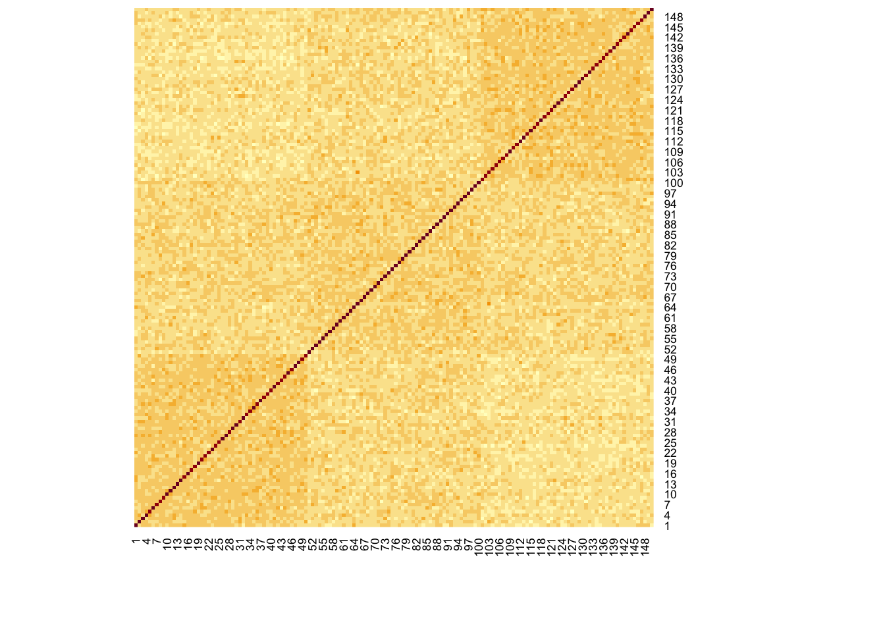

trivial_analysis
yuqimiao
2020-09-08
Last updated: 2020-09-23
Checks: 7 0
Knit directory: multiomics-SIMLR/
This reproducible R Markdown analysis was created with workflowr (version 1.6.2). The Checks tab describes the reproducibility checks that were applied when the results were created. The Past versions tab lists the development history.
Great! Since the R Markdown file has been committed to the Git repository, you know the exact version of the code that produced these results.
Great job! The global environment was empty. Objects defined in the global environment can affect the analysis in your R Markdown file in unknown ways. For reproduciblity it’s best to always run the code in an empty environment.
The command set.seed(20200830) was run prior to running the code in the R Markdown file. Setting a seed ensures that any results that rely on randomness, e.g. subsampling or permutations, are reproducible.
Great job! Recording the operating system, R version, and package versions is critical for reproducibility.
Nice! There were no cached chunks for this analysis, so you can be confident that you successfully produced the results during this run.
Great job! Using relative paths to the files within your workflowr project makes it easier to run your code on other machines.
Great! You are using Git for version control. Tracking code development and connecting the code version to the results is critical for reproducibility.
The results in this page were generated with repository version 449a753. See the Past versions tab to see a history of the changes made to the R Markdown and HTML files.
Note that you need to be careful to ensure that all relevant files for the analysis have been committed to Git prior to generating the results (you can use wflow_publish or wflow_git_commit). workflowr only checks the R Markdown file, but you know if there are other scripts or data files that it depends on. Below is the status of the Git repository when the results were generated:
Ignored files:
Ignored: .DS_Store
Ignored: .Rhistory
Ignored: .Rproj.user/
Ignored: analysis/.DS_Store
Ignored: code/.DS_Store
Ignored: code/R/.DS_Store
Ignored: code/functions/.DS_Store
Ignored: data/.DS_Store
Untracked files:
Untracked: SIMLR-tracking.md
Untracked: analysis/derivation_of_weights.jpeg
Untracked: code/bck_scripts/
Untracked: code/cluster_functions/
Untracked: code/functions/Changing_rho.R
Untracked: code/functions/SIMLR_no_weights.R
Untracked: code/functions/simulation_tidy.R
Untracked: data/balance_24_table.Rdata
Untracked: data/eff37_24_table.Rdata
Untracked: data/example_data/
Untracked: data/simulation_2data/
Untracked: data/simulation_data_var10_s4/
Untracked: data/simulation_data_var20_s4/
Untracked: data/simulation_fixWeight/
Untracked: data/simulation_normalization/
Untracked: data/simulation_rho/
Untracked: data/simulation_var10_50/
Untracked: data/simulation_var5_50/
Untracked: data/table_balance_3d3g.Rdata
Untracked: sub111_eff55_u20.rds
Unstaged changes:
Deleted: analysis/sim_report.rmd
Modified: code/R/utils.simlr.R
Deleted: code/functions/SNF_init_generater.R
Deleted: code/functions/kernel_buiding_functions.R
Deleted: code/functions/multiple.kernel.verify.R
Modified: code/functions/simulation_function.R
Modified: code/functions/simulation_verify.R
Note that any generated files, e.g. HTML, png, CSS, etc., are not included in this status report because it is ok for generated content to have uncommitted changes.
These are the previous versions of the repository in which changes were made to the R Markdown (analysis/trivial_analysis.rmd) and HTML (docs/trivial_analysis.html) files. If you’ve configured a remote Git repository (see ?wflow_git_remote), click on the hyperlinks in the table below to view the files as they were in that past version.
| File | Version | Author | Date | Message |
|---|---|---|---|---|
| Rmd | 449a753 | yuqimiao | 2020-09-23 | update with new analysis |
| html | 04bea8d | yuqimiao | 2020-09-09 | Build site. |
| Rmd | 43057b6 | yuqimiao | 2020-09-09 | change small index |
| html | a03de39 | yuqimiao | 2020-09-09 | Build site. |
| Rmd | 1179a63 | yuqimiao | 2020-09-09 | simulation describe and basic operation for a data in trivial analysis |
For cluster evaluation index
library(igraph)
Attaching package: 'igraph'The following objects are masked from 'package:stats':
decompose, spectrumThe following object is masked from 'package:base':
unionlibrary(tidyverse)── Attaching packages ─────────────────────────────────────────────────────── tidyverse 1.3.0 ──✓ ggplot2 3.3.0 ✓ purrr 0.3.3
✓ tibble 3.0.0 ✓ dplyr 0.8.5
✓ tidyr 1.0.2 ✓ stringr 1.4.0
✓ readr 1.3.1 ✓ forcats 0.5.0── Conflicts ────────────────────────────────────────────────────────── tidyverse_conflicts() ──
x dplyr::as_data_frame() masks tibble::as_data_frame(), igraph::as_data_frame()
x purrr::compose() masks igraph::compose()
x tidyr::crossing() masks igraph::crossing()
x dplyr::filter() masks stats::filter()
x dplyr::groups() masks igraph::groups()
x dplyr::lag() masks stats::lag()
x purrr::simplify() masks igraph::simplify()compare(rep(1:3,times = c(15,15,120)),rep(1:2, times = c(30,120)),method = "nmi")[1] 0.8783349compare(rep(1:3,times = c(15,15,120)),rep(1:2, times = c(30,120)),method = "rand")[1] 0.9798658It can be seen that, using the rand and nmi as evaluation criterion, although A/B can’t be divide, the index is also very high
simulation logic
- here we are assuming every data can only provide 1 division, which means for a type of data, we can only cluster to 2 subtypes;
- For this simulation setting, we can also expand our subtype number to 5 or 6, which can be divided by:
for 5 * “12/345” * “13/245” * “14/235”
for 6 * 123/456 * 145/236 * 124/356
(use plot to show the division)
we can directly change the sub_ratio, data_division to get 5 or 6 subtype
# try using 4 groups divided by 3 types of data
## input
size = 240
sub_ratio = c(rep(0.2,4),rep(0.1,2))
eff_size = rep(5,3)
sigma = 10
data_divide ="123/456"
dist = "normal"
## calculate index_cut for given subtype ratio
index_cut = cumsum(sub_ratio)*size
index = list()
for(i in 1:length(index_cut)){
if(i == 1){
index[[i]] = 1:index_cut[1]
}else{
index[[i]] = (index_cut[[i-1]]+1):index_cut[[i]]
}
}
### for a data
data1 = matrix(0,size, 1000)
divide = lapply(X = str_split(str_split(data_divide,pattern = "/")[[1]], pattern = ""),
FUN = as.numeric
)
ind1 = NULL
for(i in 1:length(divide[[1]])){
ind1 = c(ind1, index[[divide[[1]][i]]])
}
ind2 = NULL
for(i in 1:length(divide[[2]])){
ind2 = c(ind2, index[[divide[[2]][i]]])
}
if (dist == "normal"){
data1[ind1,1:50] = rnorm(length(ind1)*50, eff_size[1], sqrt(sigma))
data1[ind2,1:50] = rnorm(length(ind2)*50, -eff_size[1], sqrt(sigma))
}else if(dist == "logit"){
data1[ind1,1:50] = sapply(X = rnorm(length(ind1)*50, eff_size[1], sqrt(sigma)),
FUN = function(x) exp(x)/(1+exp(x))
)
data1[ind2,1:50] = sapply(X = rnorm(length(ind2)*50, -eff_size[1], sqrt(sigma)),
FUN = function(x) exp(x)/(1+exp(x))
)
}
truelabel = NULL
for (i in 1:length(index)){
truelabel = c(truelabel, rep(i,length(index[[i]])))
}
par(mfrow = c(2,1))
hist(data1[1:144,1:50], main = "the first 3 subtype")
hist(data1[145:200,1:50], main = " the latter 3 subtype")
- For weight construction
Using the best performance setting for abSNF( from peifeng’s paper)
n1 = 50*0.6#n1 is # of correct weights for informative features
n2 = 950*0.8#n2 is # of correct weights for non-informative features
r1 = 1
r2 = 3
uninfo_r1 = 0
uninfo_r2 = 1
#r1, r2, uninfo_r1, uninfo_r2 define the magnitude of correct wights
ge_weight=abs(runif(1000,0,1))
s=sample(1:50,n1)
ge_weight[s]=runif(n1,r1,r2)
ss=sample(51:1000,n2)
ge_weight[ss]=runif(n2,uninfo_r1,uninfo_r2)
plot(1:1000, ge_weight)
| Version | Author | Date |
|---|---|---|
| a03de39 | yuqimiao | 2020-09-09 |
Steps for a single data:
From every data type, we want to get the result:
- multiple kernels
- affinity matrix
- eigen gap result
- SIMLR result
Firstly, for clarification, the affinity matrix gives the RBF kernels of the data, while the multiple kernel getting from SIMLR-multiple.kernel function gives the nomalized distance btw subjects, so we can’t just using the averaged multiple kernel to do the SNF
# check affinity matrix and kernels
library(abSNF)
Attaching package: 'abSNF'The following object is masked _by_ '.GlobalEnv':
data1library(SIMLR)
library(SNFtool)
Attaching package: 'SNFtool'The following objects are masked from 'package:abSNF':
affinityMatrix, dist2, SNF, spectralClustering,
standardNormalizationlibrary(parallel)
library(Matrix)
Attaching package: 'Matrix'The following objects are masked from 'package:tidyr':
expand, pack, unpacksource("./code/R/compute.multiple.kernel.R")
data1 = standardNormalization(data1)
mk1 = multiple.kernel(data1)
af1 = affinityMatrix(dist2_w(as.matrix(data1),as.matrix(data1), weight = ge_weight))
par(mfrow = c(2,1))
displayClusters(af1, truelabel)
displayClusters(as.matrix(mk1[[1]]), truelabel)
| Version | Author | Date |
|---|---|---|
| a03de39 | yuqimiao | 2020-09-09 |
gap and SIMLR results
K = 2
cores.ratio = 0.5
gap1 = estimateNumberOfClustersGivenGraph(af1,2:5)$`Eigen-gap best`
simlr1 = SIMLR(t(data1), K,cores.ratio = cores.ratio)Computing the multiple Kernels.
Performing network diffiusion.
Iteration: 1
Iteration: 2
Iteration: 3
Iteration: 4
Iteration: 5
Iteration: 6
Iteration: 7
Iteration: 8
Iteration: 9
Iteration: 10 Warning in SIMLR(t(data1), K, cores.ratio = cores.ratio): Maybe you should set a
larger value of c.Performing t-SNE.
Epoch: Iteration # 100 error is: 0.1822132
Epoch: Iteration # 200 error is: 0.1818182
Epoch: Iteration # 300 error is: 0.1815448
Epoch: Iteration # 400 error is: 0.1813413
Epoch: Iteration # 500 error is: 0.1811851
Epoch: Iteration # 600 error is: 0.1810577
Epoch: Iteration # 700 error is: 0.1809502
Epoch: Iteration # 800 error is: 0.1808586
Epoch: Iteration # 900 error is: 0.1807793
Epoch: Iteration # 1000 error is: 0.1807122
Performing Kmeans.
Performing t-SNE.
Epoch: Iteration # 100 error is: 9.090653
Epoch: Iteration # 200 error is: 0.1810468
Epoch: Iteration # 300 error is: 0.1804331
Epoch: Iteration # 400 error is: 0.180399
Epoch: Iteration # 500 error is: 0.1803674
Epoch: Iteration # 600 error is: 0.1803384
Epoch: Iteration # 700 error is: 0.1803136
Epoch: Iteration # 800 error is: 0.1802877
Epoch: Iteration # 900 error is: 0.1802636
Epoch: Iteration # 1000 error is: 0.1802408 nmi = compare(simlr1$y$cluster,truelabel, method = "nmi")
rand = compare(simlr1$y$cluster,truelabel, method = "rand")
nmi[1] 0.5559601rand[1] 0.6585774information for simulation setting
when we setting the division as 1/23 for data1, 12/3 for data2, there is a repeat in info
But when we set 1/2 for data1, 2/3 for data2, then there is no repeat info?
# TODOthe weight optimization
intro the question
From 50 running, we see that the mean weight for all 3 data types are balanced, but when looking at one-time output, there is always a dominant data, while the others contribute trivial. We need to figure out why this is the case.
# table_balance = NULL
# for(i in 1:10){
# tmp = simulation_3(size = 150,sub_ratio = rep(1/3,3), eff_size = c(1,1,1), data_divide =
# c("1/23","12/3","2/13"), sigma = 4)
# res = simulation_verify_3data(K =3, tmp,tmp$truelabel)
# table_balance = rbind(table_balance, res)
# }
load("./data/table_balance_3d3g.Rdata")
## show the direct output of weights for sym_balanced setting
table_balance[1:20,]%>% select(contains("weight"))# A tibble: 20 x 2
weight1_sum weight2_sum
<dbl> <dbl>
1 0.829 0.0680
2 0.0888 0.812
3 0.0889 0.110
4 0.0954 0.0921
5 0.0892 0.806
6 0.0895 0.108
7 0.0928 0.810
8 0.0791 0.106
9 0.102 0.0886
10 0.809 0.121
11 0.120 0.795
12 0.798 0.0953
13 0.0950 0.102
14 0.105 0.0721
15 0.0943 0.805
16 0.806 0.0859
17 0.805 0.0922
18 0.809 0.115
19 0.806 0.0890
20 0.0916 0.800 ## the average of weight for sym_balanced setting
table_balance %>% select(contains("weight") | contains("nmi")) %>% summarise_all(mean)# A tibble: 1 x 7
weight1_sum weight2_sum nmi1 nmi2 nmi3 nmi_SNF nmi_SIMLR
<dbl> <dbl> <dbl> <dbl> <dbl> <dbl> <dbl>
1 0.348 0.342 0.497 0.545 0.504 0.992 0.758Derivation of weight
When fixing the similarity matrix

derivation of weight
From the derivation, we can see that the weight for a certain kernel depends on 2 parts:
- the sum of multiplication of distance and similarity matrix
- the hyperparameter \(\rho\)
Data simulation
set.seed(234)
## get 2 balanced data type
library(tidyverse)
source("./code/functions/simulation_function.R")
set.seed(111)
sim = simulation_2(size = 150, sub_ratio = rep(1/3,3), eff_size = c(5,5), sigma = c(50,50),data_divide = c("1/23","12/3"),dist = c("normal","normal"))
## see the distribution of 2 data types
par(mfrow = c(2,1))
plot(1:150, rowMeans(sim$data1[,1:50]),main = "data1")
plot(1:150, rowMeans(sim$data2[,1:50]),main = "data2")
Verification of multiplication sum
## calculate the multiple distance_kernels for both data type
## input n*p
source("./code/R/compute.multiple.kernel.R")
source("./code/functions/SIMLR_multi.R")
Attaching package: 'gplots'The following object is masked from 'package:stats':
lowessLoading required package: cluster
Attaching package: 'clValid'The following object is masked from 'package:igraph':
clusterslibrary("parallel")
library(Matrix)
mk1 = multiple.kernel(sim$data1,cores.ratio = 0.5)
mk2 = multiple.kernel(sim$data2,cores.ratio = 0.5)
D_kernels = list()
for(i in 1:110){
if(i<=55){
D_kernels[[i]] = mk1[[i]]
}else if (i<=110){
D_kernels[[i]] = mk2[[i-55]]
}
}
## calculate the simlr_multi without SNF
sim_res = SIMLR_multi(D_Kernels = D_kernels, c = 3)Iteration: 1
Iteration: 2
Iteration: 3
Iteration: 4
Iteration: 5
Iteration: 6
Iteration: 7
Iteration: 8
Iteration: 9
Iteration: 10 Warning in SIMLR_multi(D_Kernels = D_kernels, c = 3): Maybe you should set a
larger value of c.[1] 150
Performing t-SNE.
Epoch: Iteration # 100 error is: 0.9580798
Epoch: Iteration # 200 error is: 0.931895
Epoch: Iteration # 300 error is: 0.9294187
Epoch: Iteration # 400 error is: 0.9282864
Epoch: Iteration # 500 error is: 0.927408
Epoch: Iteration # 600 error is: 0.9267601
Epoch: Iteration # 700 error is: 0.9261759
Epoch: Iteration # 800 error is: 0.9257151
Epoch: Iteration # 900 error is: 0.9253101
Epoch: Iteration # 1000 error is: 0.9249692
Performing Kmeans.
Performing t-SNE.
Epoch: Iteration # 100 error is: 21.34117
Epoch: Iteration # 200 error is: 2.668857
Epoch: Iteration # 300 error is: 2.065903
Epoch: Iteration # 400 error is: 1.609242
Epoch: Iteration # 500 error is: 1.370344
Epoch: Iteration # 600 error is: 1.42602
Epoch: Iteration # 700 error is: 1.333115
Epoch: Iteration # 800 error is: 1.29425
Epoch: Iteration # 900 error is: 1.248563
Epoch: Iteration # 1000 error is: 1.180638 s_res = sim_res$S
## the first 55 weights
sum(sim_res$alphaK[1:55])[1] 0.780769# ## calculate the SIMLR with SNF_initial
#
# w1 = affinityMatrix(dist2_w(as.matrix(sim$data1),as.matrix(sim$data1), weight = sim$weight1))
# w2 = affinityMatrix(dist2_w(as.matrix(sim$data2),as.matrix(sim$data2), weight = sim$weight2))
#
# W = SNF(list(w1,w2))
# sim_SNF_res = SIMLR_multi_SNF(D_Kernels = D_kernels,SNF_init = W,c = 3,cores.ratio = 0.5)
# sum(sim_SNF_res$alphaK[1:55])
# source("./code/functions/simulation_verify.R")
# source("./code/functions/SIMLR_multi.R")
# eva = simulation_verify_2data(3,sim,truelabel = sim$truelabel)multiplication_sum = NULL
for(i in 1:110){
multiplication_sum = c(multiplication_sum,sum(as.matrix(D_kernels[[i]])*s_res))
}
## see the relationship btw multi_sum and weight
par(mfrow = c(2,1))
plot(1:110,multiplication_sum)
plot(1:110, sim_res$alphaK)
par(mfrow = c(1,1))
plot(multiplication_sum, sim_res$alphaK)
## only focus on the 11 significantly contributed kernels
par(mfrow = c(2,1))
plot(seq(1,110,by = 5),multiplication_sum[seq(1,110,by = 5)],xaxt = "n")
axis(1, at = seq(1,110,by = 5),las = 2)
plot(seq(1,110,by = 5), sim_res$alphaK[seq(1,110,by = 5)],xaxt = "n")
axis(1, at = seq(1,110,by = 5),las = 2)
## the order of distance and the order of weights
order_ms = sort(multiplication_sum,index.return = T)$ix
order_weight = sort(sim_res$alphaK,decreasing = T, index.return = T)$ix
par(mfrow = c(1,1))
plot(order_ms, order_weight)
abline(a = 1, b = 1)
the influence of rho
Now we change \(\rho\) to see the influence
First, change the fucntion of umkl to make u as a changable parameter
# fit the SIMLR for when u = 50
sim_res_50u = SIMLR_multi_u(D_Kernels = D_kernels, c = 3, u = 50)Iteration: 1
Iteration: 2
Iteration: 3
Iteration: 4
Iteration: 5
Iteration: 6
Iteration: 7
Iteration: 8
Iteration: 9
Iteration: 10 Warning in SIMLR_multi_u(D_Kernels = D_kernels, c = 3, u = 50): Maybe you should
set a larger value of c.[1] 150
Performing t-SNE.
Epoch: Iteration # 100 error is: 0.9317586
Epoch: Iteration # 200 error is: 0.925849
Epoch: Iteration # 300 error is: 0.924624
Epoch: Iteration # 400 error is: 0.9236158
Epoch: Iteration # 500 error is: 0.9227727
Epoch: Iteration # 600 error is: 0.9220494
Epoch: Iteration # 700 error is: 0.9214234
Epoch: Iteration # 800 error is: 0.9208786
Epoch: Iteration # 900 error is: 0.9204002
Epoch: Iteration # 1000 error is: 0.9199635
Performing Kmeans.
Performing t-SNE.
Epoch: Iteration # 100 error is: 21.03762
Epoch: Iteration # 200 error is: 2.682408
Epoch: Iteration # 300 error is: 1.993742
Epoch: Iteration # 400 error is: 1.687196
Epoch: Iteration # 500 error is: 1.299859
Epoch: Iteration # 600 error is: 2.149903
Epoch: Iteration # 700 error is: 1.708494
Epoch: Iteration # 800 error is: 1.436044
Epoch: Iteration # 900 error is: 1.527541
Epoch: Iteration # 1000 error is: 1.332775 s_50 = sim_res_50u$S
sum(sim_res_50u$alphaK[1:55])[1] 0.5227395# show the difference of weights when using different weight
multiplication_sum_u50 = NULL
for(i in 1:110){
multiplication_sum_u50 = c(multiplication_sum_u50,sum(as.matrix(D_kernels[[i]]) * s_50))
}
par(mfrow = c(2,2))
## when u is 20
plot(multiplication_sum[1:55], sim_res$alphaK[1:55],main = "u = 20")
plot(multiplication_sum[56:110], sim_res$alphaK[56:110],main = "u = 20")
## when u is 50
plot(multiplication_sum_u50[1:55], sim_res_50u$alphaK[1:55],main = "u = 50")
plot(multiplication_sum_u50[56:110], sim_res_50u$alphaK[56:110],main = "u = 50")
From the plot, we can see that when u increases, weights are more balanced.
# See the influence to the results for different weight
compare(sim_res$y$cluster, sim$truelabel,method = "nmi")[1] 0.8705214compare(sim_res_50u$y$cluster, sim$truelabel,method = "nmi")[1] 0.9701912From this single running, we can see the large U will increase the performance of SIMLR Also, I run the simulation multiple times for different scenario to see the effect of U
Scenario: * eff_size: c(5,5),c(3,7) * sub_ratio: rep(1/3,3),c(0.3,0.4,0.3)
Under every scenario, we test U = c(20,30,40,50) separately
We will focus * the sum of weight for first data type * the final preformance.
files = list.files("./data/simulation_rho/")
table_rho = NULL
for(i in 1:length(files)){
table_cur = readRDS(paste("./data/simulation_rho/",files[i],sep = ""))
table_rho = rbind(table_rho, table_cur)
}
## show the mean performance
table_rho_mean = table_rho %>%
group_by(scenario,cluster) %>%
summarise_all(mean) %>%
mutate(nmi_improve = nmi_SIMLR-nmi_SNF) %>%
arrange(desc(nmi_improve))
View(table_rho_mean)
## show the weight change among U
table_rho %>%
separate(scenario, into = c("sub_eff","U"), sep = "_(?=[^_]+$)") %>%
ggplot(aes(x = U,y = data1_weight,color = sub_eff)) +
geom_boxplot()From the simulation, we can see, when the variance is not extremely large, the performance of SIMLR will be relative stable. Only by changing weight, the performance of SIMLR can’t show greater improve than SNF
The influence of weight
Here we see weight is depend on both the multiplication sum and the hyper-parameter \(\rho\), but we still don’t know:
- how weight make difference to the final SIMLR results?
- Is it meaningful to upweight the data with weaker signal?
How would weight-changing influence the final performance?
Data simulation with different signal strength
Here we are focusing on the weak signals’ performnce, so we choose simulation data with distinguish signal strength.
We use the effective size to divide the signals strength, but sub_ratio division will be shown in simulaion
## Data simulation
set.seed(34)
sim_eff37 = simulation_2(eff_size = c(3,7),sigma = c(18,(49*2)))
## show the data
par(mfrow = c(1,1))
### data 2 has larger signals but also larger var
plot(1:150, rowMeans(sim_eff37$data2[,1:50]),col = "red")
### data1 has weaker signals also smaller var
points(1:150, rowMeans(sim_eff37$data1[,1:50]))
Weight fixed SIMLR
Here we fit SIMLR separately for 2 data and get the kernels weight separatey
## normalize data
data1 = standardNormalization(sim_eff37$data1)
data2 = standardNormalization(sim_eff37$data2)
truelabel = sim_eff37$truelabel
## fit SIMLR and get optimal weights separately
res1 = SIMLR(t(data1),c = 2)Computing the multiple Kernels.
Performing network diffiusion.
Iteration: 1
Iteration: 2
Iteration: 3
Iteration: 4
Iteration: 5
Iteration: 6
Iteration: 7
Iteration: 8
Iteration: 9
Iteration: 10 Warning in SIMLR(t(data1), c = 2): Maybe you should set a larger value of c.Performing t-SNE.
Epoch: Iteration # 100 error is: 0.1476069
Epoch: Iteration # 200 error is: 0.1427758
Epoch: Iteration # 300 error is: 0.141879
Epoch: Iteration # 400 error is: 0.1418759
Epoch: Iteration # 500 error is: 0.1418759
Epoch: Iteration # 600 error is: 0.1418759
Epoch: Iteration # 700 error is: 0.1418759
Epoch: Iteration # 800 error is: 0.1418759
Epoch: Iteration # 900 error is: 0.1418759
Epoch: Iteration # 1000 error is: 0.1418759
Performing Kmeans.
Performing t-SNE.
Epoch: Iteration # 100 error is: 20.31832
Epoch: Iteration # 200 error is: 1.347726
Epoch: Iteration # 300 error is: 0.8308289
Epoch: Iteration # 400 error is: 0.6982239
Epoch: Iteration # 500 error is: 0.9568906
Epoch: Iteration # 600 error is: 0.7165129
Epoch: Iteration # 700 error is: 0.7661221
Epoch: Iteration # 800 error is: 0.6693819
Epoch: Iteration # 900 error is: 0.6282362
Epoch: Iteration # 1000 error is: 0.2095464 res2 = SIMLR(t(data2),c = 2)Computing the multiple Kernels.
Performing network diffiusion.
Iteration: 1
Iteration: 2
Iteration: 3
Iteration: 4
Iteration: 5
Iteration: 6
Iteration: 7
Iteration: 8
Iteration: 9
Iteration: 10 Warning in SIMLR(t(data2), c = 2): Maybe you should set a larger value of c.Performing t-SNE.
Epoch: Iteration # 100 error is: 1.338702
Epoch: Iteration # 200 error is: 0.7958512
Epoch: Iteration # 300 error is: 0.7066354
Epoch: Iteration # 400 error is: 0.198662
Epoch: Iteration # 500 error is: 0.1307042
Epoch: Iteration # 600 error is: 0.1306997
Epoch: Iteration # 700 error is: 0.1306997
Epoch: Iteration # 800 error is: 0.1306997
Epoch: Iteration # 900 error is: 0.1306997
Epoch: Iteration # 1000 error is: 0.1306997
Performing Kmeans.
Performing t-SNE.
Epoch: Iteration # 100 error is: 19.8327
Epoch: Iteration # 200 error is: 1.224019
Epoch: Iteration # 300 error is: 0.885877
Epoch: Iteration # 400 error is: 1.046093
Epoch: Iteration # 500 error is: 0.776506
Epoch: Iteration # 600 error is: 0.6828011
Epoch: Iteration # 700 error is: 0.7826884
Epoch: Iteration # 800 error is: 0.6793153
Epoch: Iteration # 900 error is: 0.8409255
Epoch: Iteration # 1000 error is: 0.6839049 opt_w1 = res1$alphaK
opt_w2 = res2$alphaK
weight_list = list(opt_w1 = opt_w1, opt_w2 = opt_w2)
## get the combined multiple kernel separately
mk1 = multiple.kernel(data1,cores.ratio = 0.5)
mk2 = multiple.kernel(data2,cores.ratio = 0.5)
D_kernels = list()
for(i in 1:110){
if(i<=55){
D_kernels[[i]] = mk1[[i]]
}else if (i<=110){
D_kernels[[i]] = mk2[[i-55]]
}
}
## change weight of 2 datas to see the performance
source("./code/functions/SIMLR_no_weights.R")
w_data = mapply(c, seq(0.1,0.9,by = 0.2), seq(0.9,0.1, by = -0.2),SIMPLIFY = F)
nmi_fixed = NULL
S_list = list()
cluster_list = list()
for(i in 1:length(w_data)){
res_f = SIMLR_multi_fix_weight(D_Kernels = D_kernels,c = 3, weight_list = weight_list, w_data = w_data[[i]])
S_list[[i]] = res_f$S
cluster_list[[i]] = res_f$y$cluster
nmi_fixed = c(nmi_fixed, compare(res_f$y$cluster, truelabel, method = "nmi"))
}Iteration: 1
Iteration: 2
Iteration: 3
Iteration: 4
Iteration: 5
Iteration: 6
Iteration: 7
Iteration: 8
Iteration: 9
Iteration: 10 Warning in SIMLR_multi_fix_weight(D_Kernels = D_kernels, c = 3, weight_list =
weight_list, : Maybe you should set a larger value of c.[1] 150
Performing t-SNE.
Epoch: Iteration # 100 error is: 1.434678
Epoch: Iteration # 200 error is: 1.329142
Epoch: Iteration # 300 error is: 1.279401
Epoch: Iteration # 400 error is: 1.274282
Epoch: Iteration # 500 error is: 1.273015
Epoch: Iteration # 600 error is: 1.272433
Epoch: Iteration # 700 error is: 1.271841
Epoch: Iteration # 800 error is: 1.271392
Epoch: Iteration # 900 error is: 1.270108
Epoch: Iteration # 1000 error is: 1.270067
Performing Kmeans.
Performing t-SNE.
Epoch: Iteration # 100 error is: 23.90626
Epoch: Iteration # 200 error is: 3.11765
Epoch: Iteration # 300 error is: 2.686785
Epoch: Iteration # 400 error is: 2.398984
Epoch: Iteration # 500 error is: 2.211409
Epoch: Iteration # 600 error is: 2.060641
Epoch: Iteration # 700 error is: 3.454158
Epoch: Iteration # 800 error is: 2.154869
Epoch: Iteration # 900 error is: 2.132855
Epoch: Iteration # 1000 error is: 1.894342
Iteration: 1
Iteration: 2
Iteration: 3
Iteration: 4
Iteration: 5
Iteration: 6
Iteration: 7
Iteration: 8
Iteration: 9
Iteration: 10
Iteration: 11
Iteration: 12
Iteration: 13
Iteration: 14
Iteration: 15
Iteration: 16 Warning in SIMLR_multi_fix_weight(D_Kernels = D_kernels, c = 3, weight_list =
weight_list, : Maybe you should set a larger value of c.[1] 150
Performing t-SNE.
Epoch: Iteration # 100 error is: 1.426763
Epoch: Iteration # 200 error is: 1.380901
Epoch: Iteration # 300 error is: 1.300302
Epoch: Iteration # 400 error is: 1.247993
Epoch: Iteration # 500 error is: 1.284049
Epoch: Iteration # 600 error is: 1.245708
Epoch: Iteration # 700 error is: 1.205452
Epoch: Iteration # 800 error is: 1.205047
Epoch: Iteration # 900 error is: 1.205023
Epoch: Iteration # 1000 error is: 1.205009
Performing Kmeans.
Performing t-SNE.
Epoch: Iteration # 100 error is: 24.69269
Epoch: Iteration # 200 error is: 3.206753
Epoch: Iteration # 300 error is: 3.241894
Epoch: Iteration # 400 error is: 2.411839
Epoch: Iteration # 500 error is: 2.80144
Epoch: Iteration # 600 error is: 1.96068
Epoch: Iteration # 700 error is: 1.90415
Epoch: Iteration # 800 error is: 1.684428
Epoch: Iteration # 900 error is: 1.63551
Epoch: Iteration # 1000 error is: 1.621914
Iteration: 1
Iteration: 2
Iteration: 3
Iteration: 4
Iteration: 5
Iteration: 6
Iteration: 7
Iteration: 8
Iteration: 9
Iteration: 10
Iteration: 11
Iteration: 12
Iteration: 13
[1] 150
Performing t-SNE.
Epoch: Iteration # 100 error is: 1.366724
Epoch: Iteration # 200 error is: 1.22543
Epoch: Iteration # 300 error is: 1.204505
Epoch: Iteration # 400 error is: 1.214772
Epoch: Iteration # 500 error is: 1.158994
Epoch: Iteration # 600 error is: 1.232693
Epoch: Iteration # 700 error is: 1.204697
Epoch: Iteration # 800 error is: 1.187089
Epoch: Iteration # 900 error is: 1.215718
Epoch: Iteration # 1000 error is: 1.150525
Performing Kmeans.
Performing t-SNE.
Epoch: Iteration # 100 error is: 23.55743
Epoch: Iteration # 200 error is: 4.14069
Epoch: Iteration # 300 error is: 3.729381
Epoch: Iteration # 400 error is: 2.544075
Epoch: Iteration # 500 error is: 2.949063
Epoch: Iteration # 600 error is: 2.260336
Epoch: Iteration # 700 error is: 1.900858
Epoch: Iteration # 800 error is: 2.166565
Epoch: Iteration # 900 error is: 1.918338
Epoch: Iteration # 1000 error is: 1.856616
Iteration: 1
Iteration: 2
Iteration: 3
Iteration: 4
Iteration: 5
Iteration: 6
Iteration: 7
Iteration: 8
Iteration: 9
Iteration: 10
Iteration: 11
Iteration: 12
Iteration: 13
Iteration: 14
Iteration: 15
Iteration: 16
Iteration: 17
Iteration: 18
Iteration: 19
Iteration: 20
Iteration: 21
Iteration: 22
Iteration: 23
Iteration: 24
Iteration: 25
Iteration: 26
Iteration: 27
Iteration: 28
Iteration: 29
Iteration: 30 Warning in SIMLR_multi_fix_weight(D_Kernels = D_kernels, c = 3, weight_list =
weight_list, : Maybe you should set a larger value of c.[1] 150
Performing t-SNE.
Epoch: Iteration # 100 error is: 1.759
Epoch: Iteration # 200 error is: 1.554139
Epoch: Iteration # 300 error is: 1.531787
Epoch: Iteration # 400 error is: 1.539285
Epoch: Iteration # 500 error is: 1.49412
Epoch: Iteration # 600 error is: 1.435276
Epoch: Iteration # 700 error is: 1.466894
Epoch: Iteration # 800 error is: 1.38226
Epoch: Iteration # 900 error is: 1.412896
Epoch: Iteration # 1000 error is: 1.475316
Performing Kmeans.
Performing t-SNE.
Epoch: Iteration # 100 error is: 22.67138
Epoch: Iteration # 200 error is: 3.585961
Epoch: Iteration # 300 error is: 2.813455
Epoch: Iteration # 400 error is: 2.57101
Epoch: Iteration # 500 error is: 2.10672
Epoch: Iteration # 600 error is: 1.772652
Epoch: Iteration # 700 error is: 2.075043
Epoch: Iteration # 800 error is: 1.884877
Epoch: Iteration # 900 error is: 2.659067
Epoch: Iteration # 1000 error is: 2.580429
Iteration: 1
Iteration: 2
Iteration: 3
Iteration: 4
Iteration: 5
Iteration: 6
Iteration: 7
Iteration: 8
Iteration: 9
Iteration: 10
Iteration: 11
Iteration: 12
[1] 150
Performing t-SNE.
Epoch: Iteration # 100 error is: 1.460161
Epoch: Iteration # 200 error is: 1.292336
Epoch: Iteration # 300 error is: 1.27056
Epoch: Iteration # 400 error is: 1.165717
Epoch: Iteration # 500 error is: 1.159881
Epoch: Iteration # 600 error is: 1.15766
Epoch: Iteration # 700 error is: 1.156864
Epoch: Iteration # 800 error is: 1.156594
Epoch: Iteration # 900 error is: 1.156505
Epoch: Iteration # 1000 error is: 1.156468
Performing Kmeans.
Performing t-SNE.
Epoch: Iteration # 100 error is: 24.57099
Epoch: Iteration # 200 error is: 3.22334
Epoch: Iteration # 300 error is: 2.680551
Epoch: Iteration # 400 error is: 2.028198
Epoch: Iteration # 500 error is: 2.435684
Epoch: Iteration # 600 error is: 2.11171
Epoch: Iteration # 700 error is: 1.725489
Epoch: Iteration # 800 error is: 1.796013
Epoch: Iteration # 900 error is: 2.076346
Epoch: Iteration # 1000 error is: 1.996991 plot(seq(0.1,0.9,by = 0.2),nmi_fixed, xlab = "data1_weight")
lines(seq(0.1,0.9,by = 0.2),nmi_fixed)
nmi_fixed[1] 0.6459760 0.6279600 0.6491446 0.6275189 0.5256233## compare SIMLR_multi
sim_multi_res = SIMLR_multi(D_Kernels = D_kernels,c = 3)Iteration: 1
Iteration: 2
Iteration: 3
Iteration: 4
Iteration: 5
Iteration: 6
Iteration: 7
Iteration: 8
Iteration: 9
Iteration: 10
Iteration: 11 Warning in SIMLR_multi(D_Kernels = D_kernels, c = 3): Maybe you should set a
larger value of c.[1] 150
Performing t-SNE.
Epoch: Iteration # 100 error is: 0.9969508
Epoch: Iteration # 200 error is: 0.9688448
Epoch: Iteration # 300 error is: 0.967231
Epoch: Iteration # 400 error is: 0.9664355
Epoch: Iteration # 500 error is: 0.9657663
Epoch: Iteration # 600 error is: 0.9651987
Epoch: Iteration # 700 error is: 0.9646936
Epoch: Iteration # 800 error is: 0.964258
Epoch: Iteration # 900 error is: 0.9638759
Epoch: Iteration # 1000 error is: 0.9635386
Performing Kmeans.
Performing t-SNE.
Epoch: Iteration # 100 error is: 23.84248
Epoch: Iteration # 200 error is: 2.838191
Epoch: Iteration # 300 error is: 2.353247
Epoch: Iteration # 400 error is: 1.62152
Epoch: Iteration # 500 error is: 1.980576
Epoch: Iteration # 600 error is: 1.825637
Epoch: Iteration # 700 error is: 1.390285
Epoch: Iteration # 800 error is: 1.473021
Epoch: Iteration # 900 error is: 1.379392
Epoch: Iteration # 1000 error is: 1.286734 compare(sim_multi_res$y$cluster, truelabel,method = "nmi")[1] 0.7507393## compare to SNF pwerformance
af1 = affinityMatrix(dist2_w(as.matrix(data1),as.matrix(data1), weight = sim_eff37$weight1))
af2 = affinityMatrix(dist2_w(as.matrix(data2),as.matrix(data2), weight = sim_eff37$weight2))
W = SNF(list(af1,af2))
cluster_SNF = spectralClustering(W,3)
compare(cluster_SNF, truelabel,method = "nmi")[1] 0.8636442From above analysis, we can first see that fix weight for data separately will decrease the performance, and changing weight has no specific influence to the final performance unless the important signal is being down weighted too much
files = list.files("./data/simulation_fixWeight/")
file_nmi = files[str_detect(files,"nmi")]
table_fix = NULL
for(i in 1:length(file_nmi)){
table_cur = readRDS(paste("./data/simulation_fixWeight/",file_nmi[i],sep = ""))
table_fix = rbind(table_fix,table_cur)
}
table_fix_mean = table_fix %>%
group_by(scenario) %>%
summarise_all(mean)
View(table_fix_mean)Show SNF after similar
W = SNF(list(res1$S,res2$S))
compare(spectralClustering(W,3), sim$truelabel,method = "nmi")[1] 0.5164203What is the difference btw initial S_0 and S after SIMLR optimization?
As shown here, the multiplication sum has trivial difference for the initial \(S_0\), but after the optimization by SIMLR, the difference btw 2 multiplication_sum become larger.
Is this right? What is the role of S here? should the data be far away?
Possible problem and innovation of SIMLR
Problem of SIMLR in this simulation
Different clusters has different contribution requirment from data
Data simulation
set.seed(234)
## get 2 balanced data type
library(tidyverse)
source("./code/functions/simulation_function.R")
set.seed(111)
sim = simulation_2(size = 150, sub_ratio = rep(1/3,3), eff_size = c(5,5), sigma = c(100,100),data_divide = c("1/23","12/3"),dist = c("normal","normal"))
## see the distribution of 2 data types
par(mfrow = c(2,1))
plot(1:150, rowMeans(sim$data1[,1:50]),main = "data1")
plot(1:150, rowMeans(sim$data2[,1:50]),main = "data2")
## separately fit the similarity matrix
res1 = SIMLR(t(sim$data1),2)
res2 = SIMLR(t(sim$data2),2)
## show the similarity difference
dist_s = dist2(res1$S, res2$S)
plot(density(dist_s))
plot(density(diag(dist_s)))
## show the dissimilar person within 2 similarity matrix
## use the last 25 quantiles of diagnal similarity
dissim = (1:150)[diag(dist_s) > quantile(diag(dist_s))[4]]Possible solutions
the order of similarity in separate SIMLR results
Since the 2 data are seeparating different clusters, the order of similarity btw pairs should reflect some information:
For a given pair: * if 2 data both contain compliant info, i.e., both cluster them into 1, or both not, then th order should be similar * If 2 data contain different info, i.e., one data clustered the pair into 1 cluter, the other data clustered them separately, then the order should show difference.
Here we use a large variance balance case to verify the guess
library(tidyverse)
source("./code/functions/simulation_function.R")
set.seed(111)
sim = simulation_2(size = 150, sub_ratio = rep(1/3,3), eff_size = c(5,5), sigma = c(100,100),data_divide = c("1/23","12/3"),dist = c("normal","normal"))
## see the distribution of 2 data types
par(mfrow = c(2,1))
plot(1:150, rowMeans(sim$data1[,1:50]),main = "data1")
plot(1:150, rowMeans(sim$data2[,1:50]),main = "data2")
## Do SIMLE separately
res1 = SIMLR(t(sim$data1),2)
res2 = SIMLR(t(sim$data2),2)
## see the difference of order of 2 similarity matrix
# sim_ord1 = sort(res1$S,index.return = T)$ix
# sim_ord2 = sort(res2$S,index.return = T)$ix
# dif_ord = match(sim_ord1,sim_ord2)-(1:length(sim_ord1))
# par(mfrow = c(1,1))
# plot(density(dif_ord))
# pair_to_Sij plot for both data
par(mfrow = c(2,1))
plot(1:150^2,as.vector(res1$S))
plot(1:150^2,res2$S)What if we directly choose the largest distance in 2 data for every pair?
## first calculate the weighted distance
mk1 = multiple.kernel(sim$data1,cores.ratio = 0.5)
mk2 = multiple.kernel(sim$data2,cores.ratio = 0.5)
opt_dist1 = matrix(0,150,150)
for(i in 1:55){
opt_dist1 = opt_dist1 + res1$alphaK[i]*mk1[[i]]
}
opt_dist2 = matrix(0,150,150)
for(i in 1:55){
opt_dist2 = opt_dist2 + res2$alphaK[i]*mk2[[i]]
}
## then, for the similar ordered pairs, we use the min distance, for the dissimilar pairs, we use the max distance
c1 = 1000
c2 = 1000
distX = matrix(0,150,150)
for(i in 1:150^2){
if(dif_ord[i]<-c1 |dif_ord[i] > c2){
distX[i] = max(opt_dist1[i],opt_dist2[i])
}else{
distX[i] = min(opt_dist1[i],opt_dist2[i])
}
}
heatmap(distX,Rowv = NA, Colv = NA, scale = "column")
## then we should change the SIMLR process, we don't need weight and multiple kernels, we only need the process of rank constraint and max multiplication_sum
source("./code/functions/SIMLR_no_weights.R")
res_sep = SIMLR_no_weight(distX,c = 3)
compare(res_sep$y$cluster, sim$truelabel,method = "nmi")[TO THINK] Add freedom of weight – specific weight for every cluster
New term in the objective function: \[\min_{w} \sum_{i,j,t,l}w_{tl}D_{l,i,j}S_{ij}I\{sub_{ij}\in C_t\}\] t is for different cluster
The influence of variance
From the above 3_data_3_group table, the SIMLR performance show a severe reduction. For I always using the distribution with small variance, which both methods are having a better performance.
See the simulation result with changing variance, where the variance is changing with the effective size
The influence of normalize
the multiple relation btw mean and variance
sessionInfo()R version 3.6.2 (2019-12-12)
Platform: x86_64-apple-darwin15.6.0 (64-bit)
Running under: macOS Catalina 10.15.2
Matrix products: default
BLAS: /Library/Frameworks/R.framework/Versions/3.6/Resources/lib/libRblas.0.dylib
LAPACK: /Library/Frameworks/R.framework/Versions/3.6/Resources/lib/libRlapack.dylib
locale:
[1] en_US.UTF-8/en_US.UTF-8/en_US.UTF-8/C/en_US.UTF-8/en_US.UTF-8
attached base packages:
[1] parallel stats graphics grDevices utils datasets methods
[8] base
other attached packages:
[1] clValid_0.6-9 cluster_2.1.0 gplots_3.0.3 Matrix_1.2-18
[5] SNFtool_2.3.0 SIMLR_1.12.0 abSNF_1.0.0 forcats_0.5.0
[9] stringr_1.4.0 dplyr_0.8.5 purrr_0.3.3 readr_1.3.1
[13] tidyr_1.0.2 tibble_3.0.0 ggplot2_3.3.0 tidyverse_1.3.0
[17] igraph_1.2.5 workflowr_1.6.2
loaded via a namespace (and not attached):
[1] nlme_3.1-145 bitops_1.0-6 fs_1.4.1 lubridate_1.7.8
[5] RcppAnnoy_0.0.16 httr_1.4.1 rprojroot_1.3-2 tools_3.6.2
[9] backports_1.1.6 utf8_1.1.4 R6_2.4.1 KernSmooth_2.23-16
[13] DBI_1.1.0 colorspace_1.4-1 withr_2.1.2 tidyselect_1.0.0
[17] compiler_3.6.2 git2r_0.26.1 cli_2.0.2 rvest_0.3.5
[21] xml2_1.3.0 labeling_0.3 caTools_1.18.0 scales_1.1.0
[25] digest_0.6.25 rmarkdown_2.1 pkgconfig_2.0.3 htmltools_0.4.0
[29] prettyGraphs_2.1.6 dbplyr_1.4.2 rlang_0.4.5 readxl_1.3.1
[33] rstudioapi_0.11 farver_2.0.3 generics_0.0.2 jsonlite_1.6.1
[37] gtools_3.8.2 magrittr_1.5 heatmap.plus_1.3 Rcpp_1.0.4.6
[41] munsell_0.5.0 fansi_0.4.1 lifecycle_0.2.0 stringi_1.4.6
[45] whisker_0.4 yaml_2.2.1 grid_3.6.2 gdata_2.18.0
[49] promises_1.1.0 crayon_1.3.4 lattice_0.20-41 haven_2.2.0
[53] hms_0.5.3 knitr_1.28 pillar_1.4.3 codetools_0.2-16
[57] reprex_0.3.0 glue_1.4.0 evaluate_0.14 alluvial_0.1-2
[61] modelr_0.1.6 vctrs_0.2.4 httpuv_1.5.2 cellranger_1.1.0
[65] gtable_0.3.0 ExPosition_2.8.23 assertthat_0.2.1 xfun_0.12
[69] broom_0.5.5 pracma_2.2.9 RSpectra_0.16-0 later_1.0.0
[73] class_7.3-16 ellipsis_0.3.0